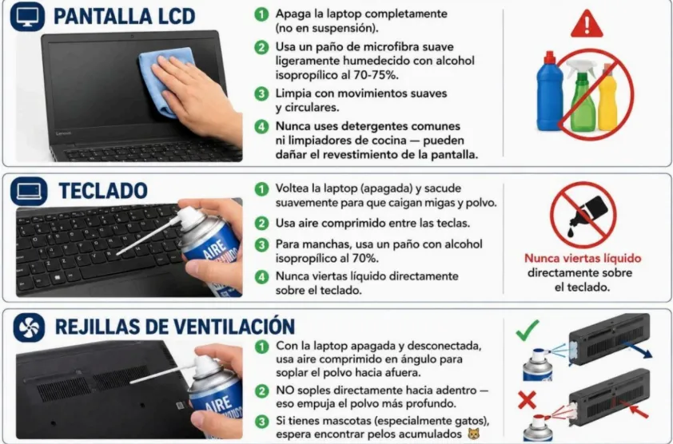
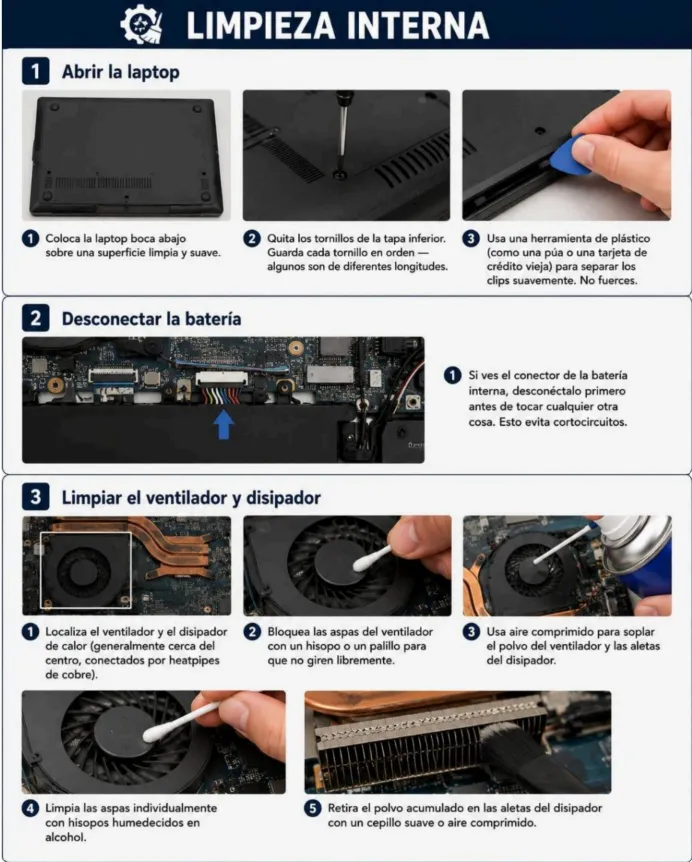

ARTÍCULO TÉCNICO
Guía Limpieza de ventiladores
Introducción
LIMPIEZA DE HARDWARE
POR QUE ES IMPORTANTE LIMPIAR EL HARDWARE? La limpieza fisica de una computadora es una de las tareas de mantenimiento mas importantes y, a menudo, mas olvidadas. Muchas personas usan sus equipos todos los dias para trabajar, estudiar, navegar por internet o entretenerse, pero raramente piensan en lo que ocurre en su interior. Con el uso diario, el polvo, la suciedad, los pelos de mascotas e incluso pequenas particulas de comida se van acumulando en los componentes internos y externos del equipo. Esto puede parecer algo sin importancia, pero en realidad tiene consecuencias graves si no se controla a tiempo. El polvo es uno de los principales enemigos de cualquier computadora. Cuando se acumula en los ventiladores, en las rejillas de ventilacion, en la fuente de poder o sobre la placa base, obstruye el flujo de aire que necesitan los componentes para mantenerse a una temperatura adecuada. Los ventiladores estan disenados para expulsar el aire caliente y traer aire fresco, pero si estan tapados de polvo, no pueden hacer su trabajo correctamente. Como resultado, el procesador (CPU), la tarjeta grafica (GPU) y otros componentes empiezan a sobrecalentarse, lo que hace que la computadora funcione mas lenta, se congele o, en casos extremos, se apague sola para protegerse del dano. Ademas del sobrecalentamiento, el polvo puede actuar como un aislante termico, impidiendo que los disipadores de calor (esas piezas metalicas con aletas que se ven sobre el procesador) disipen el calor de manera eficiente. También puede causar fallas electricas si entra en contacto con circuitos sensibles, generar ruidos molestos en los ventiladores al hacerlos girar de forma desbalanceada, y reducir significativamente la vida util del equipo.
PASO RECOMENDADO PARA LA LIMPIEZA
Apagar y desconectar: Siempre apaga la computadora, desconecta el cable de corriente y retira cualquier dispositivo conectado (USB, cables, etc.). Limpieza externa: Usa un pano de microfibra ligeramente humedecido para limpiar el monitor, el teclado, el mouse y el gabinete. Nunca uses productos de limpieza agresivos directamente sobre el equipo. Limpieza del teclado: Inclina el teclado y sopla con aire comprimido entre las teclas para sacar migas, polvo y suciedad acumulada.

- Limpieza interna: (solo si tienes experiencia o supervisión): Abre el gabinete con cuidado y usa aire comprimido para soplar el polvo de los ventiladores, los disipadores, la fuente de poder y las esquinas del gabinete. Nunca uses una aspiradora domestica, ya que genera electricidad estatica que puede danar los componentes.
- Revisión de ventiladores: Asegúrate de que todos los ventiladores giren libremente y no presenten ruidos extraños. Si un ventilador no gira correctamente, puede necesitar lubricación o reemplazo
¿QUÉ SE DEBERÍA HACER?

- Para evitar todos estos problemas, se recomienda realizar una limpieza adecuada cada 6 meses como minimo. Sin embargo, si vives en un lugar muy polvoriento, si tienes mascotas en Casa 0 si el equipo esta en un ambiente con mucha humedad, es mejor hacerlo cada 3 a 4 meses.